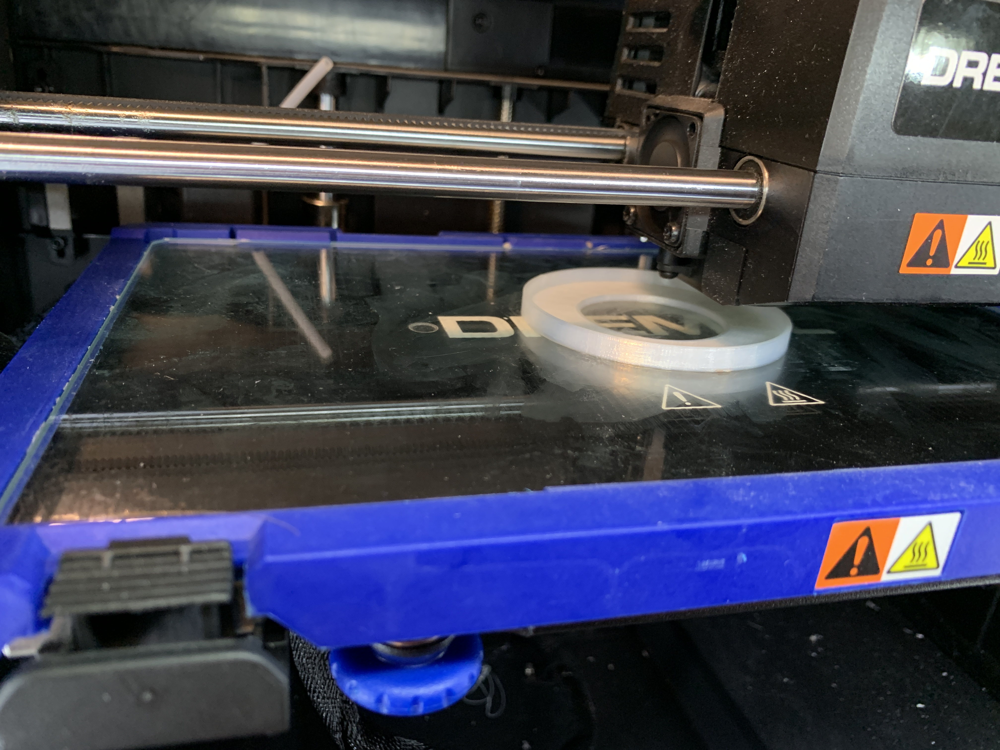

A3: 3D printing + lasercutting lamp!
by Kellie Dunn for HCDE 598
Here is my finished and assembled lamp. The finished cutout pieces are 3mm birch plywood.
The interior diffuser is 3D printed with glow-in-the-dark filament, which "charges up" when the light is on, and then glows through the stars after the light is turned off.
The lamp is made for an Ikea pendant base with a small LED bulb in it.
For the model, I used calipers to measure the parts in millimeters.
I created my laser cut file in Grasshopper, so that the key & slot design would be adjustable according to the thickness of the material.

The key and slot design works well.
I made the 3D print file in Rhino.

Once I got my model scaled properly, 3D printing went uneventfully! It came out with some boogers, but those are removable!

For the cutout pieces, I laser cut a prototype from my file out of free paperboard, and took note of a few things to correct:
making the neck of the keys thicker/sturdier, and moving the slots toward the edge of the hexagon so that the rectangle pieces don't overlap.
I also forgot to tape the lightweight paperboard down to the laser cutter surface, and the fan moved it and messed up one of my screens. Lesson learned!

On the laser cutter, I used the following settings:
for the paperboard model: speed 60, power 90, freq 50
for the 3mm plywood model: speed 10, power 100, freq 50

Documentation for Assignment 1:
Adobe Illustrator file (scaled for the final plywood model)
3dm Rhino file
STL file for 3D print
Grasshopper file
Acknowledgements:
Cindy and Tien for helping me remove so much tape shrapnel!